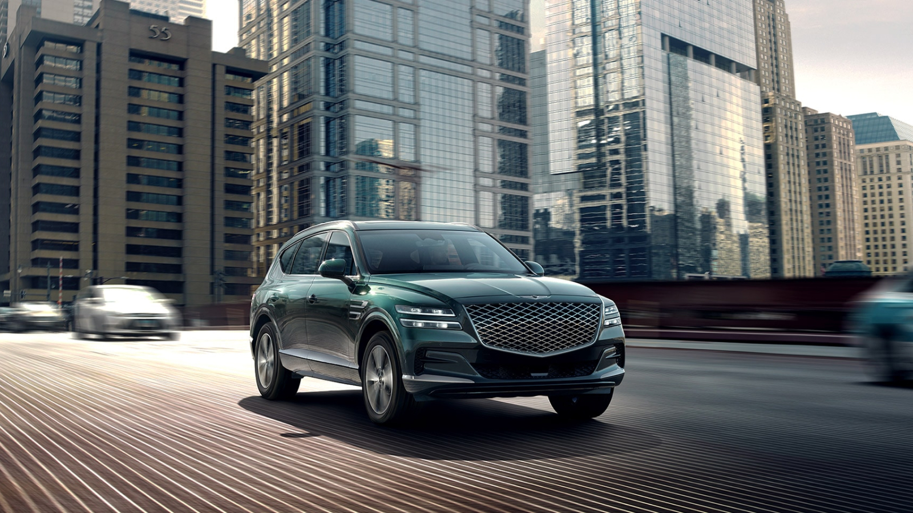
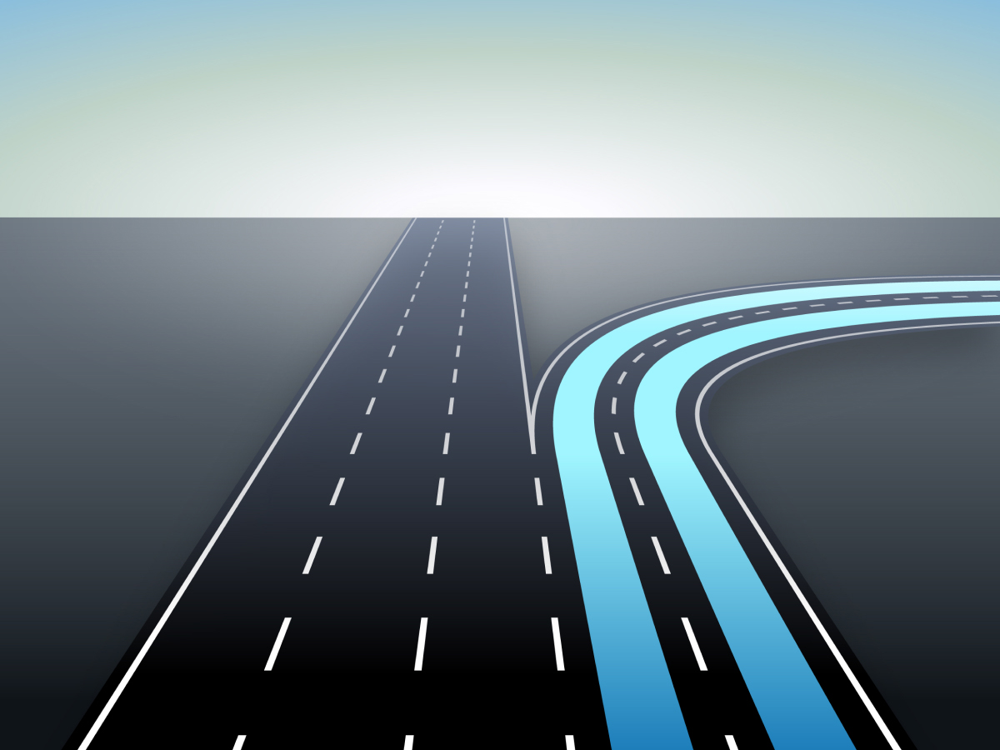
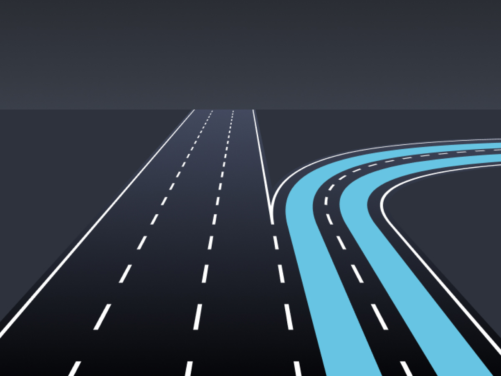
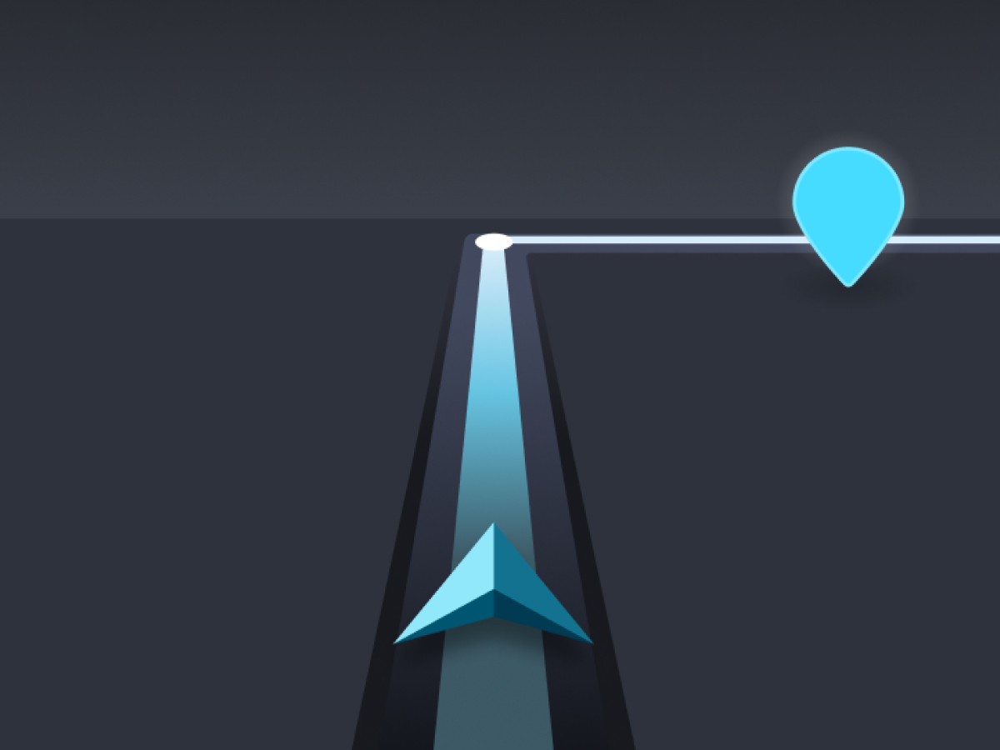
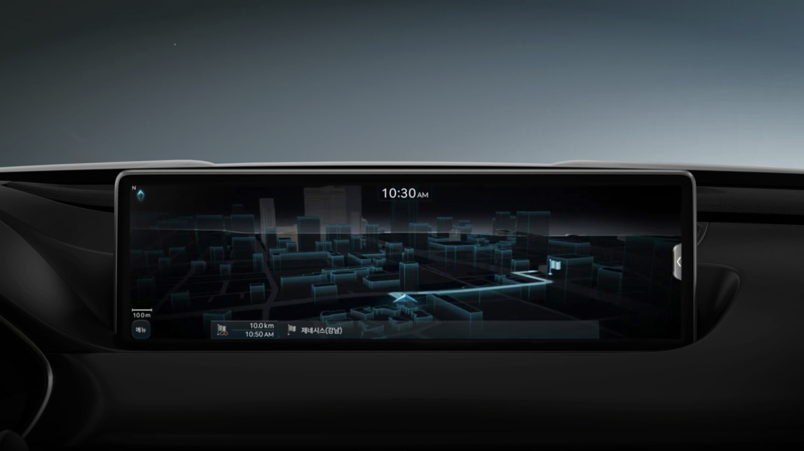
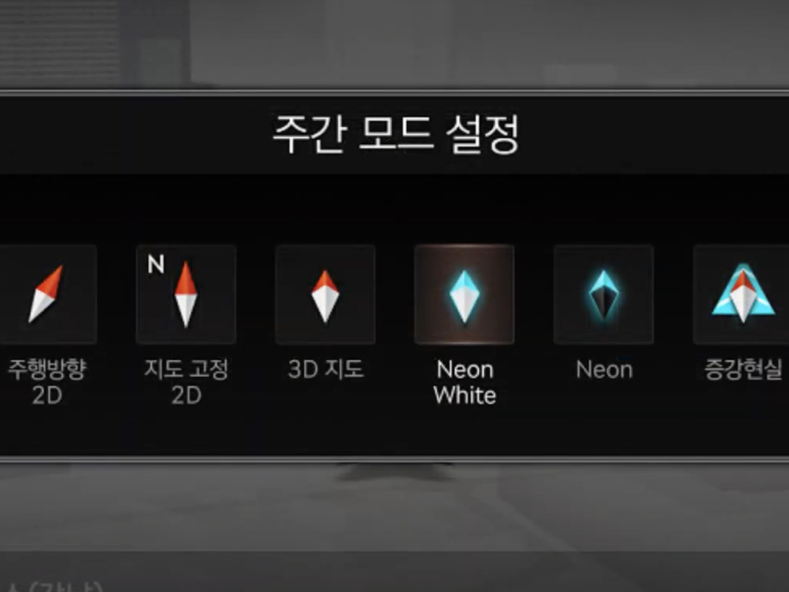
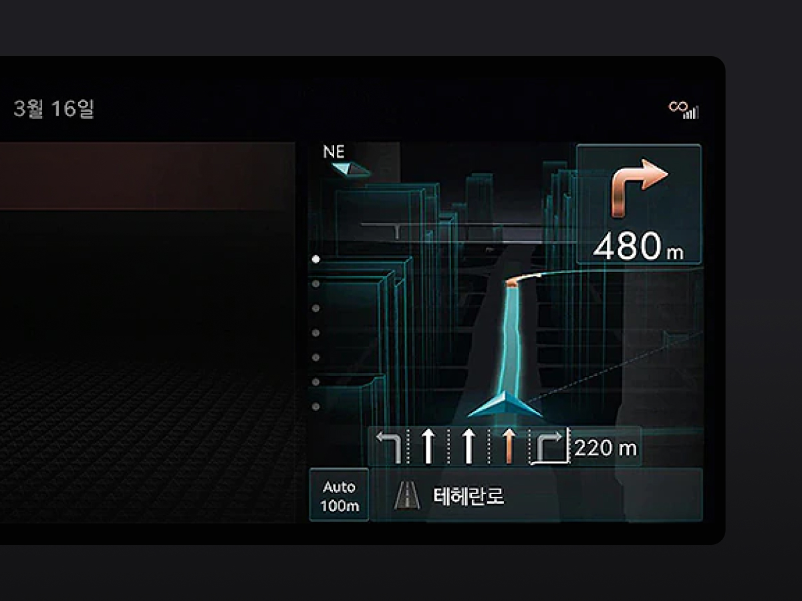

네온 테마는 차세대 지도 UX 발굴 프로젝트로 제네시스 GV80 차종에 첫 적용된 신규 뷰 모드입니다. 인테리어 디자인과 조화로운
미래지향적 감성 품질을 제공하고 더욱 강화된 음성 안내와 함께 상황에 따라 주변의 정보 우선순위를 강화시킨 스마트 내비게이션 뷰 모드입니다.
CompanyHyundai-Mnsoft
CooperationHyundai Motors
My roleGUI 40% · Iconography 100%
Period2018. 7 - 2019. 11

경로 안내 모드에서는 주변 POI 정보를 숨겨 사용자가 보다 경로 안내에 집중하고, 지도의 노후된 텍스처 이미지를 제거하여 하드웨어 성능을 확보했습니다.
건물 데이터에 그라디언트 효과를 적용하여 입체감과 함께 새로운 시각 경험을 제공합니다.
TBT GUI Renewal
회전 구간 안내 지점에서 상세 경로를 안내하는 패턴 모식도를 개선했습니다. 턴 포인트 지점에 대한 모식도는 질감 표현을 제거하여 전체 차로 정보,
추천 차로, 방향 정보가 가장 명확하게 전달될 수 있도록 합니다. 모든 질감을 한 번에 제거하지 않고 점진적으로 단순화시키면서 테스트를 진행했습니다.
A - Simplified
기존 모식도의 이미지에서 실사 이미지 질감을 제거하고 벡터 이미지로 최소한의 질감을 묘사해 테스트했습니다. 주변 사물과 배경까지 묘사하다 보니
실제 주행 환경과의 매칭을 위해 제작 및 관리되어야 할 이미지 자산이 늘어나는 문제가 있었습니다.
B - None texture
지도테마 '네온' 콘셉트에 따라 주변 사물에 대한 요소는 모두 제거해 콘셉트와 연결되는 심미적 완성도를 강화하고 경로선에 가장 집중할 수 있는 사용성을
갖도록 개선되었습니다.
A - Simplified

B - None texture
분할 화면 안내 시 지도 테마와의 조화도를 고려해 지도 테마의 타운 블록 색상과 브랜드 컬러를 활용했습니다. 브랜드 컬러는 경로선, 자차 마크, 심벌(목적지, 경유지 등)에
적용되어 내비게이션 사용 경험에 프리미엄 브랜드 아이덴티티를 연결성 있게 제공합니다.
Final Concept

Junction view

Turn-by-turn
Performance
Usability
불필요한 이미지를 제거하고 의미있는 시각 정보를 가공해 사용자가 보다 길 안내에 집중할 수 있도록 사용성을 개선했습니다.
Optimization
기존 내비게이션의 방대한 지도 텍스처 이미지들을 제거해 소프트웨어 엔진이 그리는 이미지 데이터 용량을 대폭 줄이고
하드웨어 성능을 최적화해 보다 부드러운 내비게이션 사용 경험을 제공합니다.
Premium experience
신규 차종에 맞는 디자인 스타일과 브랜드 아이덴티티를 강화해 제네시스의 프리미엄 브랜드 경험을 제공합니다.

Neon black

Neon white
Navigation mode

Split screen
Icon Renewal
현대차가 납품되는 전 국가에서 사용되는 약 100개의 아이콘 메타포를 정의하고 디자인 가이드라인을 제작했습니다. 기존 현대차 지도 아이콘은
지도용 심벌이 아닌 표준 공공 사인을 기준으로 제작되어 지도 상에서 시인성이 좋지 않았습니다. 따라서 지도에 최적화된 신규 아이콘 디자인을 정의해
시인성을 개선하고 파편화된 사양을 일원화시켜 이미지 자산 관리 환경을 개선했습니다.
Presentation
프로젝트의 필요성과 기대 결과에 대한 자료 조사를 통해 상위 결정권자를 설득하는 과정을 거쳤으며, 설득하는 기술은 간단하면서도 굉장히 어려운 일인 것을 느꼈습니다.
발의 보고, 중간보고, 최종보고를 통해 프로젝트 진행 과정을 기록하는 방법과 기록의 중요성을 배울 수 있었습니다. 이 과정을 통해 사람들에게 말하는 방법에 대해서
고민하는 계기가 생겼고 이메일, 메신저 등 다양한 방법을 통해 효과적으로 설득할 수 있도록 논리적인 의사 표현을 고민하게 되었습니다.
Project managing
프로젝트 진행 및 관리하며 공수 산정, 일정 조율 등과 같은 체계적인 업무 프로세스 경험을 했습니다. 프로세스 관리를 통해 실무 외의 관리 업무도 굉장히
어려운 일이라는 것은 느낄 수 있었습니다.
Process
자동차 업계에서의 업무 경험은 긴 호흡을 갖고 점진적으로 디자인을 발전시키는 경험을 했습니다. 눈에 보이는 결과물이 빠르게 보이지 않아 처음에는
힘들기도 했지만, 한 단계씩 엄격한 과정을 거쳐 완성도 높은 디자인 과정을 거치며 인내력을 기르고 체계적인 프로젝트 프로세스를 경험했습니다.
Epilogue
큰 조직에서 프로젝트에 참여하는 경험은 명확한 업무 분장 내에서 주어진 일정을 소화하는 효율적인 업무 환경을
경험할 수 있었습니다. 직접 프로젝트를 발의하고 진행하며 설득을 위한 프레젠테이션 능력을 기르는 계기가 되었고, 협업 관계 부서 담당자들과
긴밀하게 협업하며 커뮤니케이션 능력을 기를 수 있었습니다.